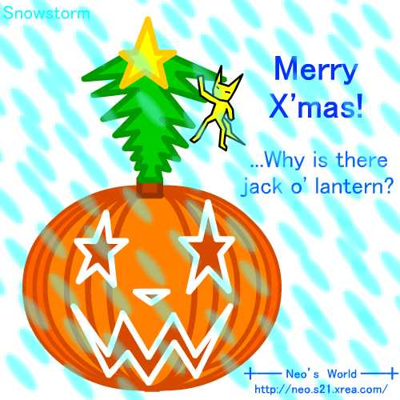
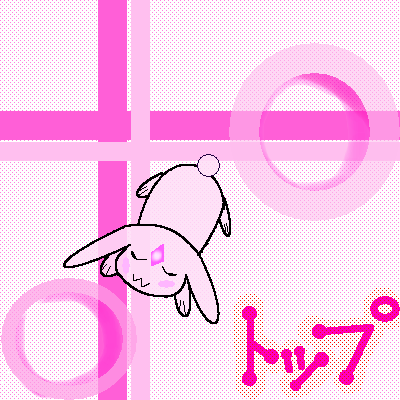
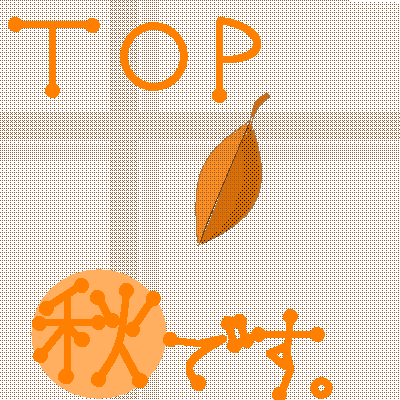
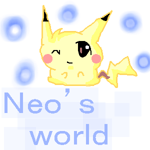

昔のイラスト
2003～2004年頃のイラストの一部が Archive.org からサルベージできたので再掲する。
2003年トップ絵
2003年はよく色々な方から「トップ絵」を送っていただいていたようで、歴代の画像を残しているページがあった。Archive.org には一部の画像しか残っていなかったが、テキストは全部残っていたので、感謝の意を込めて当時の画像ファイル名とともに残しておく。
- 暑中見舞い
-
- ぴろ さん (
neo_01_01.pngサルベージできず) - NATYAME♪ さん (
neo_01_02.jpgサルベージできず) - ryo さん (
neo_01_03.jpgサルベージできず)
- ぴろ さん (
- 1周年記念
-
- 管理人 (
neo_01_05.jpgサルベージできず) - なちゃめ さん (
neo_01_06.pngサルベージできず) - クラウス (xvi) さん (
neo_01_08.pngサルベージできず)
- 管理人 (
- 5万 Hit 記念
-
- ジル (サトシすき！ さん (
neo_01_11.jpgサルベージできず) - めりぃ★ さん (
neo_01_12.pngサルベージできず)
- ジル (サトシすき！ さん (
- クリスマス
-
- 管理人 (
neo_01_15.jpg)

- 管理人 (
- その他 Top 絵
-
- NATYAME♪ さん (
neo_01_04.pngサルベージできず) - ryo-kendo さん (
neo_01_07.jpgサルベージできず) - あかね さん (
neo_01_09.pngサルベージできず) - サクラんぼ さん (
neo_01_10.pngサルベージできず) - Σ・クラウス さん 1 (
neo_01_13.png)
 - Σ・クラウス さん 2 (
neo_01_14.png)

- NATYAME♪ さん (
「なちゃめ」「NATYAME♪」さんは、同じ小学校のクラスメイトだったと思うんだけど、今はどうしてるだろう。他人のサイトにわざわざ絵を描いて送ってくれるなんて、なかなか貴重なことだったはずなのに、あるタイミングで当時の資産を全て消去してしまい、なんてもったいないことをしてしまったんだと後悔している。15年以上前のことだけど、皆様には改めてお詫びと感謝を申し上げたい。
2003-10-25 いただいたイラスト
Archive.org より、2003-10-25 にクロールされていた pre_04.png という名前のイラスト。どなたに描いていただいたのかなど、詳細がもはや一切分からないのだが、唯一復元できたので再掲させていただく。

2周年お礼壁紙
2004年に、サイト開設から2周年を迎えた時に作った壁紙画像。800x600px と 1024x768px の2種類を配布していたが、Archive.org に残っていたのはサムネイル用の 300x225px のモノ (event_2nd_1.jpg) だけだった。以下、当時の文章。
2004年10月9日、当サイトは2周年を迎えました。100万ヒット以後も引き続き応援いただきありがとう御座います。御礼として、特製壁紙を作ってみました。また下らない物作ってる、等と言わずお受け取り下さいw。今後もよろしくお願いします！

長野県のどこかのレストランで撮った風景写真に、本サイトのマスコットキャラクターとして作った「ねお」くん (猫っぽいヤツ) と、当時 TSN という名前で作っていた棒人間 Flash のキャラクターを描いている。